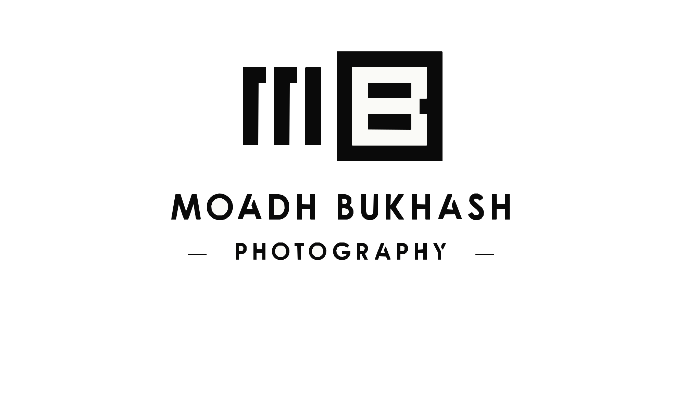

The mark.
The MB mark is a geometric monogram set in a square frame — a window. It exists in three forms: the full lockup, the monogram, and the signature line. Use the smallest one that does the job, and always from the master SVG — never re-draw or re-trace.
Full vertical lockup.
The default identity treatment. Use for covers, title pages, hero modules, and any first-encounter surface. The lockup is a single sealed asset; never recompose, retype, or re-stack the elements.


Three parts, one system.
The lockup is a vertical assembly of three elements stacked on a shared centerline: monogram on top, wordmark beneath, signature line at the base. The proportions are fixed in the master file — never re-stack horizontally, and never resize one element relative to the others.
The window mark.
For tight surfaces — favicons, watermarks, social avatars, packaging seals. The monogram is recognized by its silhouette before its letters; treat it as a shape. Use the on-white asset for light surfaces and the on-black asset for dark surfaces — the cutouts are tuned for each background.


Built on a 14×14 grid.
The monogram is drawn from a single unit — the bar. Every stroke is exactly one bar wide; every spacing is a multiple of one bar. This is the x we use to measure clearspace and minimum size.
Give it room.
Clearspace is measured in x — the same bar-width used in construction. Maintain a minimum of 2x on all sides of the monogram, and 2x around the full lockup. Air is part of the mark.
Two colorways. No more.
The mark is monochrome by design. Reproduce it only in Ink on light surfaces, or Paper on dark surfaces. Greyscale is permitted at ≥ Grey-40; tints, gradients, and brand colors are never applied to the mark itself.
What not to do.
The mark is a system of proportions. Do not stretch, recolor, rotate, outline, re-stack, or place it on busy imagery without a containing frame. Always use the master SVGs from the asset library.
BUKHASH